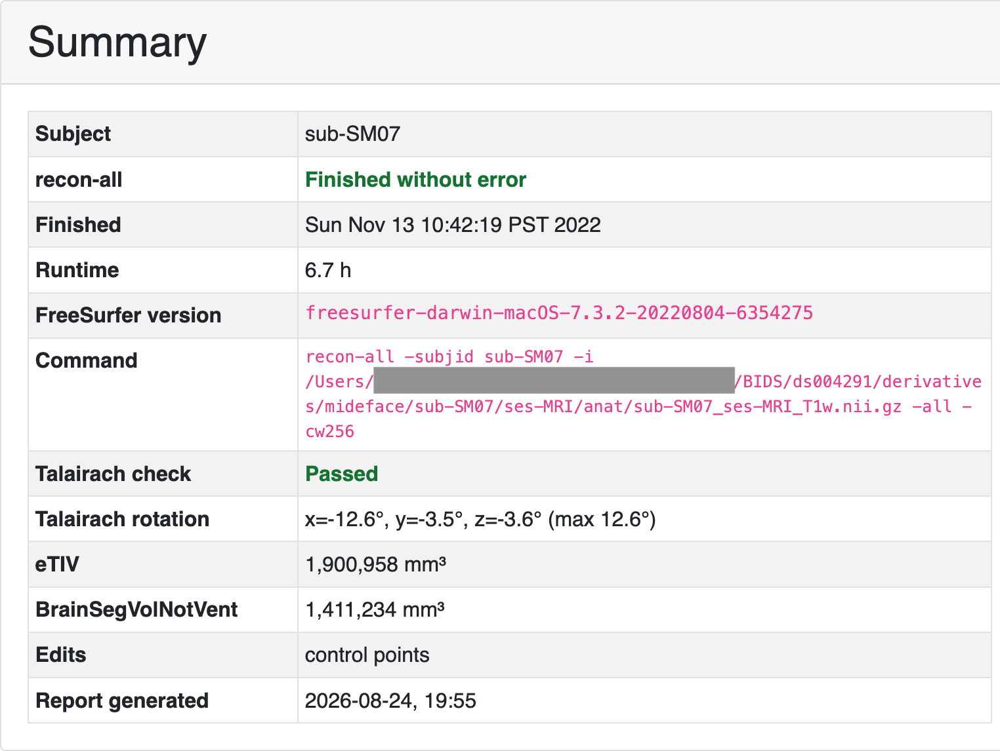
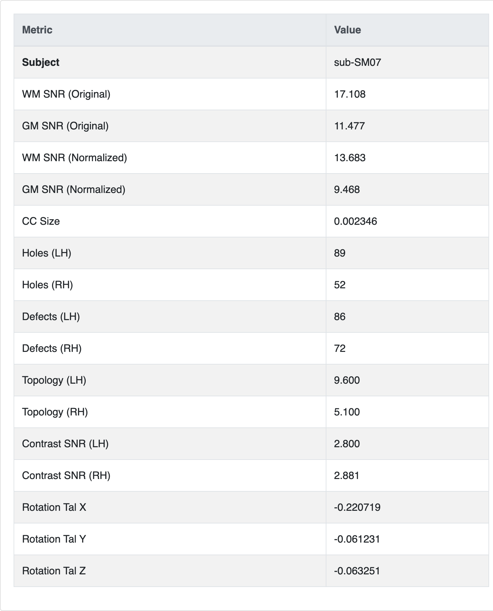
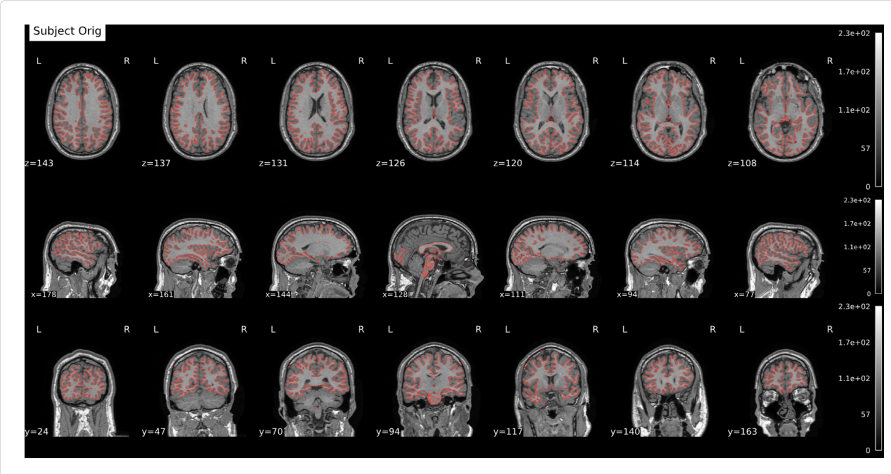
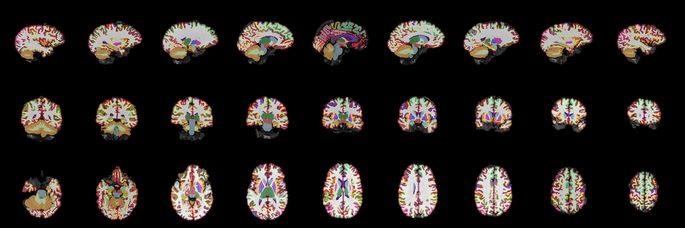
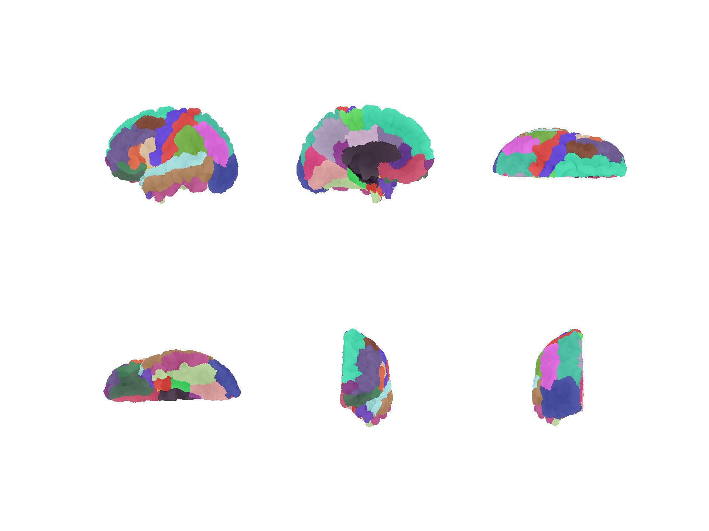

Individual reports¶
An individual report is an HTML page for one reconstructed subject: Talairach
registration, aparc+aseg screenshots, and surface views (pial, inflated,
white matter). The usual entry point is FreeSurfer.gen_batch_reports().
FSL flirt is required for the Talairach overlay. FreeSurfer must be
initialized for mri_convert and the subject tree. See
Prerequisites.
Batch generation¶
from pyfsviz import FreeSurfer
fs = FreeSurfer()
results = fs.gen_batch_reports(
"reports/",
skip_failed=True,
skip_existing=True,
)
| Argument | Default | Effect |
|---|---|---|
output_dir |
required | Root directory for HTML and images |
subjects |
all from get_subjects() |
Limit to these IDs |
template |
packaged individual.html |
Path to a Jinja2 HTML template |
gen_images |
True |
Build TLRC / aparc / surface images before HTML |
skip_failed |
True |
Continue after a subject error; store the exception in results |
skip_existing |
False |
Skip subjects that already have {output_dir}/{subject}/{subject}.html |
If skip_existing is true and the HTML file is already present, that subject
is not reprocessed (even if images are missing). Incomplete runs without HTML
are still processed.
Set skip_failed=False to abort on the first failure.
What each report contains¶
For every subject, batch generation:
- Warns if
scripts/recon-all.logdoes not end withfinished without error(check_recon_all). Processing still continues. - Builds a Talairach before/after overlay (
gen_tlrc_data+gen_tlrc_report) using the inversetalairach.xfm.ltatransform and FSLflirt. - Renders
aparc+asegscreenshot mosaics (gen_aparcaseg_plots). - Renders left/right pial, inflated, and white surfaces
(
gen_surf_plots). - Writes HTML with
gen_html_report.
Please note that Deep-MI's fsqc is used to generate the aparc+aseg mosaic. This automatically generates the metrics.csv file as well.
Open {output_dir}/{subject}/{subject}.html in a browser. Images are
referenced next to the HTML file, so keep that directory together if you copy
reports.
Example figures below are from
OpenNeuro ds004731
(reconstructions run separately; pyFSViz only builds the HTML report).
The script used to generate them is
generate_reports.py.
Summary¶
The Summary card is filled from the subject tree (scripts/,
stats/aseg.stats, Talairach transforms) plus fsqc rotation when
metrics.csv is present.

Metrics¶
The Metrics table is the fsqc row from
{output_dir}/{subject}/metrics.csv (written by gen_aparcaseg_plots).

Talairach registration¶

Aparc+aseg¶
The aparc+aseg mosaic is shown at page width. Click it to inspect slices at
higher magnification: drag to pan, scroll to zoom, Esc or Close to return.

Surfaces¶
Surface views are colored with the subject's aparc annotation.

To refresh HTML after a pyFSViz update without rerunning screenshots:
fs.gen_batch_reports("reports/", gen_images=False)
Output layout¶
reports/
sub-001/
sub-001.html
tlrc.svg
aparcaseg.png
metrics.csv
lh_pial.png
lh_infl.png
lh_white.png
rh_pial.png
rh_infl.png
rh_white.png
sub-002/
...
One subject at a time¶
The gen_* methods can be called directly for a custom pipeline. Pass the
image paths into gen_html_report (batch mode does this for you):
subject = "sub-001"
out = "reports/sub-001"
imgs = [
fs.gen_tlrc_report(subject, out),
fs.gen_aparcaseg_plots(subject, out),
*fs.gen_surf_plots(subject, out),
]
fs.gen_html_report(subject, "reports/", img_list=imgs)
gen_html_report writes {output_dir}/{subject}/{subject}.html.
To skip regenerating images in a batch run, use
gen_batch_reports(..., gen_images=False) when each subject output directory
already contains the PNG/SVG files. That is enough to pick up HTML-only
changes such as mosaic zoom; leave skip_existing=False so existing
{subject}.html files are rewritten.
Custom templates¶
Pass template= to gen_batch_reports or gen_html_report with a path to a
Jinja2 file. The default template receives timestamp, subject, summary
(recon-all status, FreeSurfer version, command, Talairach check, …),
tlrc (SVG markup), aseg (image filenames), surf (label, filename pairs),
surf_legend (aparc name/color pairs), and metrics (optional fsqc dict).
The default template used here is based off the nipreps MRIQC reports.